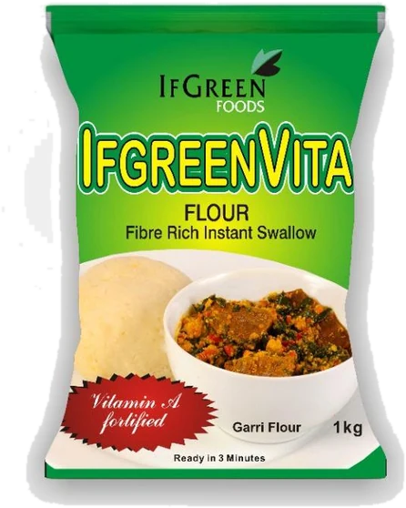
IfgreenVita Flour
Vitamin A fortified
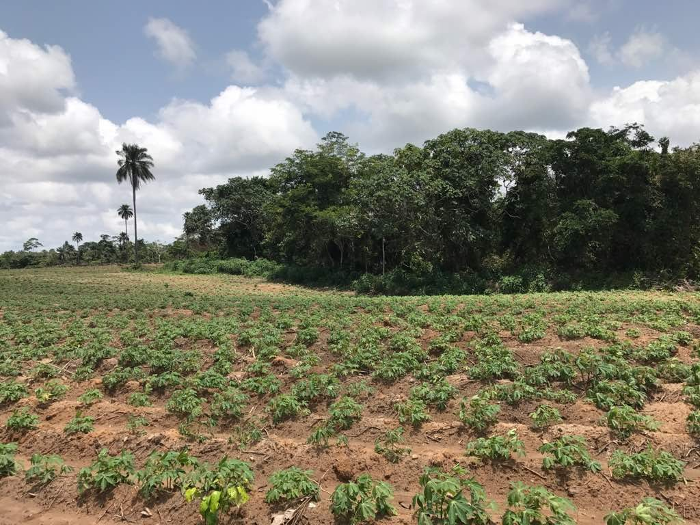
Staple foods and gluten-free industrial starch, made from cassava grown by our own farms and outgrowers.
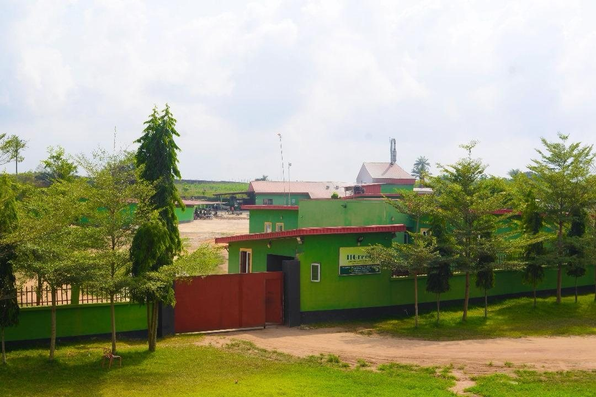
Register farmers in the field, weigh their cassava at the gate and pay them on time. Your team sees who supplied what, and who is owed.
An integrated cassava processor in Epe, 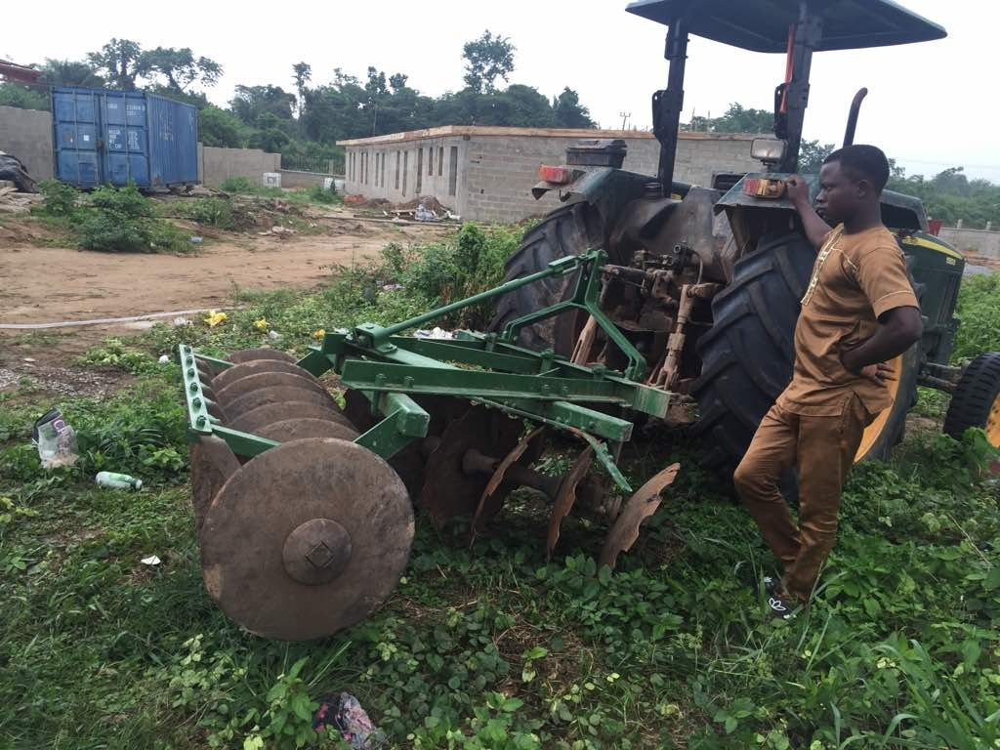

Vitamin A fortified
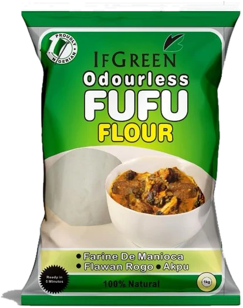
Instant swallow
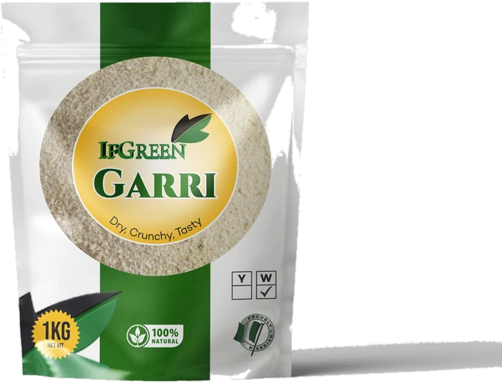
White garri
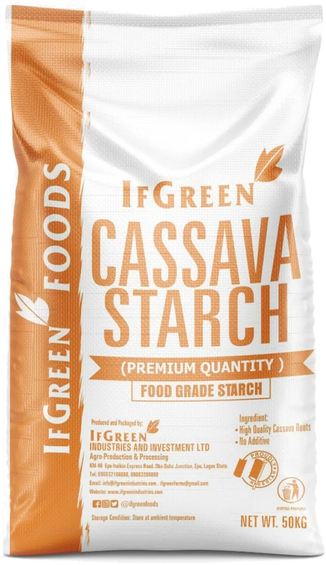
Food grade
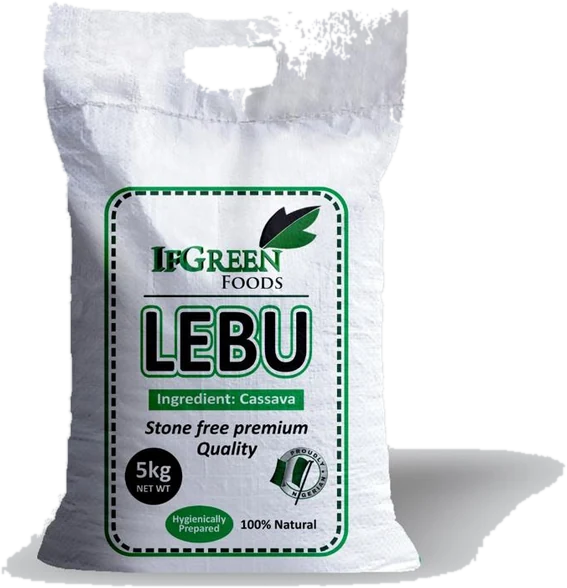
Bag
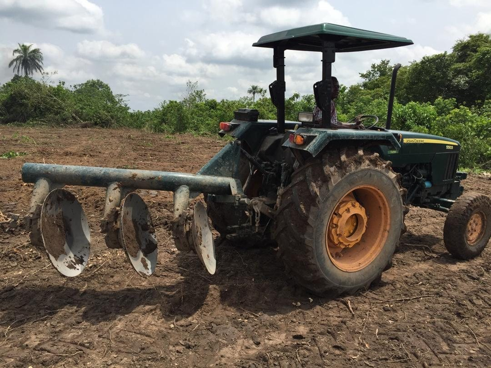
Our farms supply the factory, reinforced by an outgrower scheme with smallholder farmers and youth agripreneurs.
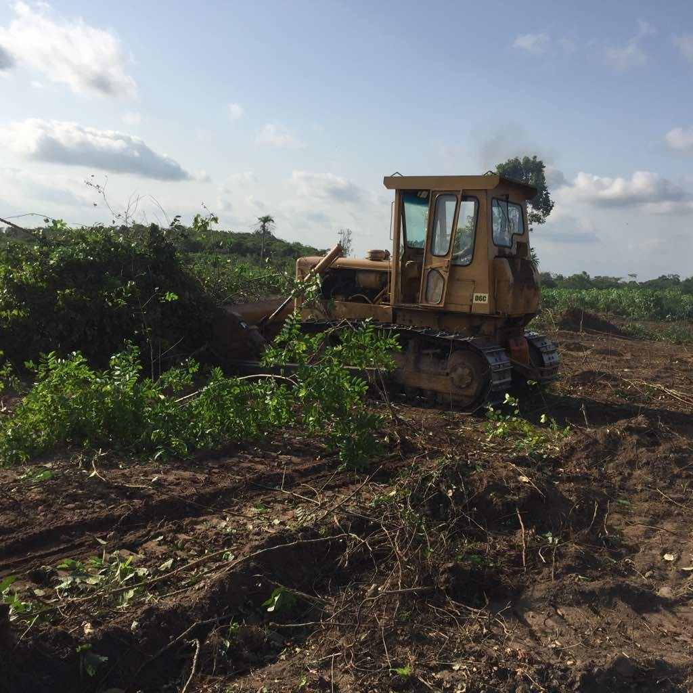
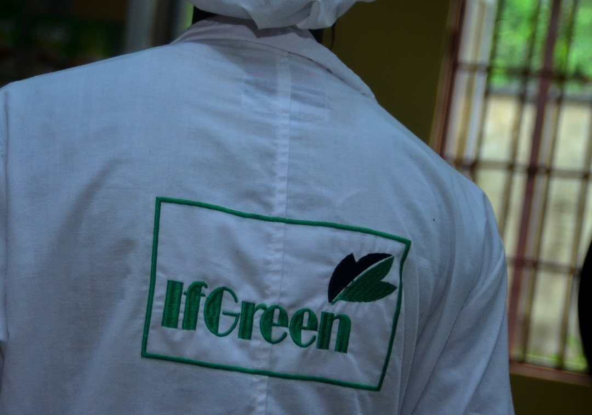
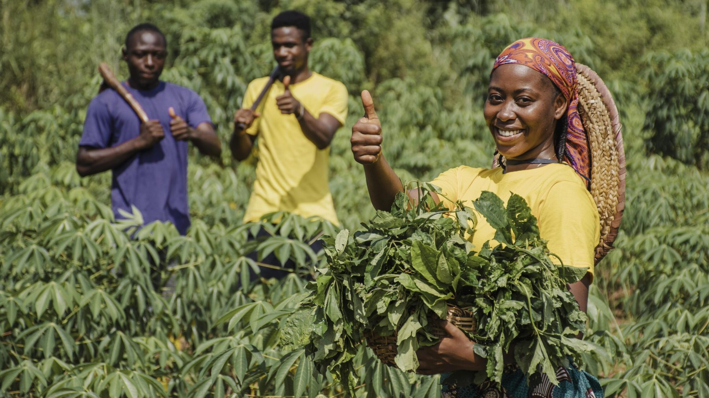
Farmers, distributors and manufacturers: call or WhatsApp 0908 318 8888.